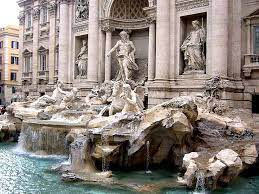

I
Italia, país europeo con una larga costa mediterránea, influyó considerablemente en la cultura y la cocina occidental. Su capital, Roma, es hogar del Vaticano, de ruinas antiguas y de obras de arte emblemáticas.
¿Porque deberias viajar a Italia?
Viajar a Italia, una frase que a todo el mundo le gusta oir, pues hay tantas razones para viajar que sería imposible enumerarlas. Italia es un libro de historia abierto a todos y cada uno, cada rincón de este país se ofrece generoso y cuenta su historia a través de sus edificios, sus monumentos, su arte y su gastronomía.
Su geografía y un clima excepcional te invitan a pasar los mejores días en tierras Italianas, podrás disfrutar de un sol que no se apaga nunca: los lagos del norte, los Apeninos, las suaves colinas de la región Toscana, las playas, los volcanes.


Los mejores lugares según los viajeros
Si bien es cierto que hay muchas maneras de categorizar a los lugares turísticos, pues la mejor es a través de los visitantes, pues ellos son quienes dan vida a estos sitios.
Italia, así como tiene destacados sitios turísticos en sus ciudades, pero cuenta también con playas paradisíacas y alejadas del bullicio de la ciudad. Uno olvida el estrés con las arenas blancas, aguas azules y unos paisajes inigualables bajo un radiante sol que ofrece, entre ellas tenemos Isola del Giglio, Mondello, Salina y Vendicari, entre otras.
-
COLISEO DE ROMA
-
FONTANA DE TREVI
 -
PONTE VECCHIO
-
CATEDRAL DE MILÁN
-
GRAN CANAL DE VENECIA
¿Cuales son las mejores ciudades de Italia?
Italia tiene muchas ciudades hermosas e históricas, que poseen su propio carácter y lugares de interés. Cada un de ellas muy diferente a la otra pero con el mismo fin, entregar al turista lo mejor de ella.
-
ROMA
-
FLORENCIA
-
VENECIA
-
CERDEÑA
-
NÁPOLES
Las mejores playas de italia..
CIUDAD DE ROMA
-
Coliseo de Roma
-
Catedra de Roma
-
Basilica de San Pedro
-
Campo de Fiori
Italia, así como tiene destacados sitios turísticos en sus ciudades, pero cuenta también con playas paradisíacas y alejadas del bullicio de la ciudad. Uno olvida el estrés con las arenas blancas, aguas azules y unos paisajes inigualables bajo un radiante sol que ofrece, entre ellas tenemos Isola del Giglio, Mondello, Salina y Vendicari, entre otras.
CIUDAD DE FLORENCIA
-
Cateral de Santa Maria
-
Ponte Vecchio
-
Campanile de Giotto
-
Galeria Uffizi
CIUDAD DE VENECIA
-
Gran canal de Venecia
-
Basilica de San Marcos
-
Puente de Rialto
CIUDAD DE MILÁN
-
Catedral de Milán
-
Teatro alla Scala
-
Gaeria Victor Manuel II
-
Castillo Sforzesco